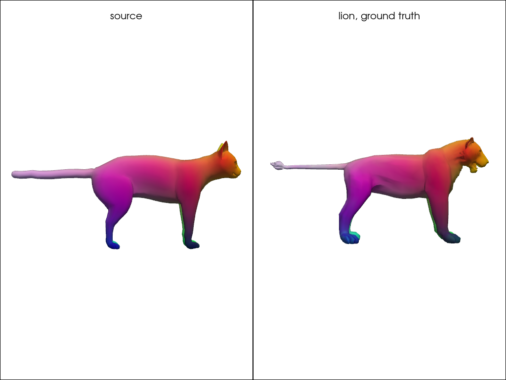
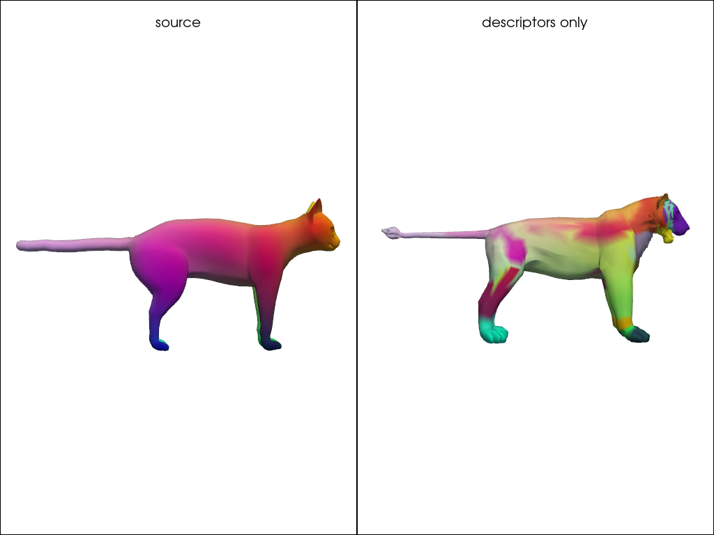
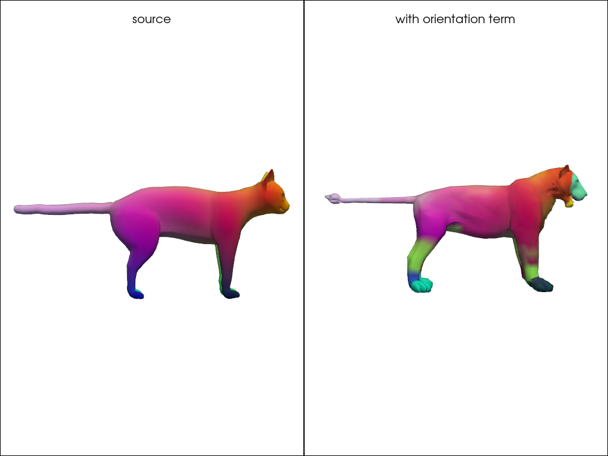
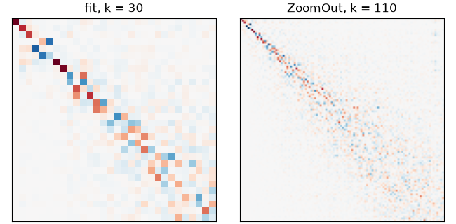
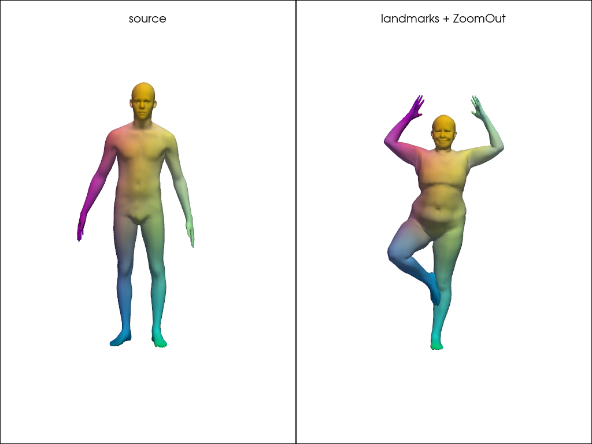

Note
Go to the end to download the full example code.
Computing a map without a correspondence¶
With neither a correspondence nor an alignment, the map has to be optimized for. pyFM does this by asking that the functional map transport descriptors — quantities computed on each shape independently — and that it commute with the Laplacian.
This page runs that optimization on a cat and a lion, shows the failure mode everyone hits first, and ends on the two recipes that actually get used.
Setup¶
The example meshes are stored in examples/data and are not part of the package.
from pathlib import Path
import matplotlib.pyplot as plt
import numpy as np
import pyvista as pv
from pyFM.functional import FunctionalMapping
from pyFM.mesh import TriMesh
from pyFM.refine.zoomout import mesh_zoomout_refine, mesh_zoomout_refine_p2p
from pyFM.spectral import knn_query, mesh_FM_to_p2p, mesh_p2p_to_FM
from pyFM.viz import plot_mesh, vertices_to_rgb
def example_data(name):
"""Return the path to a mesh in the ``examples/data`` folder."""
for folder in [Path.cwd(), *Path.cwd().parents]:
candidate = folder / "examples" / "data" / name
if candidate.exists():
return candidate
raise FileNotFoundError(
f"{name!r} not found. These examples read data from the pyFM repository; "
"clone it and run them there."
)
np.random.seed(0)
def error_function(mesh1, mesh2, gt_p2p_21, n_samples=300):
"""Return a function scoring a map from shape 2 to shape 1, in percent of sqrt_area."""
sub = mesh2.farthest_point_sampling(n_samples)
distances = mesh1.geodesic_from(gt_p2p_21[sub]) # (n1, n_samples)
columns = np.arange(n_samples)
def error(p2p_21):
return 1e2 * distances[p2p_21[sub], columns].mean() / mesh1.sqrt_area
return error
def show_map(mesh1, mesh2, p2p_21, title="", cpos=None):
"""Color shape 1 by position, and shape 2 by the colors pulled through the map."""
colors1 = vertices_to_rgb(mesh1.vertices)
pl = pv.Plotter(shape=(1, 2))
pl.subplot(0, 0)
plot_mesh(mesh1, scalars=colors1, pl=pl)
pl.add_title("source", font_size=9)
pl.subplot(0, 1)
plot_mesh(mesh2, scalars=colors1[p2p_21], pl=pl)
pl.add_title(title, font_size=9)
pl.link_views()
pl.show(cpos=cpos)
mesh1 = TriMesh.load(example_data("cat-00.off"), area_normalize=True, center=True)
mesh2 = TriMesh.load(example_data("lion-00.off"), area_normalize=True, center=True)
gt_p2p_21 = np.loadtxt(example_data("lion2cat"), dtype=int)
landmarks = np.loadtxt(example_data("landmarks.txt"), dtype=int)
error = error_function(mesh1, mesh2, gt_p2p_21)
print(mesh1, mesh2, sep="\n")
print(f"ground-truth map: {gt_p2p_21.shape}, landmark pairs: {landmarks.shape}")
<TriMesh 'cat-00': 7207 vertices, 14410 faces>
<TriMesh 'lion-00': 5000 vertices, 9996 faces>
ground-truth map: (5000,), landmark pairs: (20, 2)
The two shapes are not isometric, so this is a harder pair than the FAUST registrations of Encoding Dense Correspondences in a Functional Map, and its ground truth is itself approximate.
show_map(mesh1, mesh2, gt_p2p_21, "lion, ground truth", cpos="zy")

The optimization¶
FunctionalMapping drives the standard workflow.
preprocess() computes the spectra and the
descriptors, fit() minimizes
over C, where A and B are the descriptors written in each spectral basis.
The first term asks that descriptors be transported, the second that C commute with
the Laplacian, the third that it commute with multiplication by each descriptor, and the
fourth with the orientation operators.
Two things to know: fit returns None and leaves its result in model.FM_12, and
FunctionalMapping deep-copies both meshes, so evaluate against your own mesh1
rather than model.mesh1.
def fit_model(landmarks=None, w_orient=0):
model = FunctionalMapping(mesh1, mesh2)
model.preprocess(descr_type="WKS", subsample_step=2, landmarks=landmarks)
model.fit(K=30, w_descr=1e0, w_lap=1e-1, w_dcomm=1e0, w_orient=w_orient, verbose=True)
return model
descriptors_only = fit_model()
print(f"functional map: {descriptors_only.FM_12.shape}")
print(f"error: {error(descriptors_only.get_p2p()):.2f}")
Optimization:
30 eigenvectors on source, 30 on target
50 descriptors
w_descr=4.76e-01 w_dcomm=4.76e-01 w_lap=4.76e-02 w_orient=0.00e+00
task=CONVERGENCE: NORM OF PROJECTED GRADIENT <= PGTOL funcalls=122 nit=116 warnflag=0
Done in 0.19s
functional map: (30, 30)
error: 24.46
Descriptors alone are blind to symmetry¶
The result is wrong, and wrong in a specific way. The input descriptors don’t distinguish the intrinsic Left/Right symmetry of the two shapes, and because the functional map seeks to transfer these, ambiguities propagate to the final correspondences.
show_map(mesh1, mesh2, descriptors_only.get_p2p(), "descriptors only", cpos="zy")

The orientation term breaks the symmetry. It uses < grad f x grad g, n > on the two
shapes, which changes sign under a mirror symmetry, thus distinguishing the two sides.
Setting w_orient above zero adds this term to the optimization, and the result is a map that better distinguishes the two sides.
However, because the input descriptors remain heavily noisy the correspondences are not that great yet.
The solution is either to add a few landmarks, or to refine the map, as we show below.
oriented = fit_model(w_orient=1e0)
print(f"descriptors only : {error(descriptors_only.get_p2p()):.2f}")
print(f"with orientation term: {error(oriented.get_p2p()):.2f}")
show_map(mesh1, mesh2, oriented.get_p2p(), "with orientation term", cpos="zy")

Optimization:
30 eigenvectors on source, 30 on target
50 descriptors
w_descr=3.23e-01 w_dcomm=3.23e-01 w_lap=3.23e-02 w_orient=3.23e-01
task=CONVERGENCE: NORM OF PROJECTED GRADIENT <= PGTOL funcalls=52 nit=49 warnflag=0
Done in 0.13s
descriptors only : 24.46
with orientation term: 15.44
Landmarks¶
A handful of matched points removes the ambiguity outright. landmarks takes either
a (p,) array of indices shared by both shapes, or a (p, 2) array with one column
per shape. This is what landmarks.txt holds for this pair. Five are enough here.
These are a soft constraint: a WKS block sourced at each landmark is appended to the
descriptors, so landmarks are just extra descriptors, nothing forces C to match them exactly.
Optimization:
30 eigenvectors on source, 30 on target
300 descriptors
w_descr=4.76e-01 w_dcomm=4.76e-01 w_lap=4.76e-02 w_orient=0.00e+00
task=CONVERGENCE: NORM OF PROJECTED GRADIENT <= PGTOL funcalls=52 nit=49 warnflag=0
Done in 0.29s
with 5 landmarks: 3.39
Refinement¶
Two refinements are available, and they do different things.
icp_refine() follows the iterative closest point approach.
Since an orthogonal functional map is area preserving (which is a desirable property), we can try to look for the best orthogonal functional map that is closest to the current functional map. This new functional map then leads to new correspondences, which can again be used to compute a new orthogonal functional map, and so on. This is the ICP refinement.
It compares with the standard icp in the following way. Each point \(x\) on a shape is mapped to a spectral embedding \((\Phi_1(x), \ldots, \Phi_k(x))\) where \(\Phi_i\) is the \(i\)-th eigenfunction of the Laplace-Beltrami operator. The functional map \(C\) can be seen as a linear map between the spectral embeddings of the two shapes, that we expect to be orthogonal. This is very similar to standard icp, looking for orthogonal transformations of vertices in \(\mathbb{R}^3\). The algorithm is essentially the same.
Another approach is zoomout_refine(), which uses the same idea
of iteratively computing a new functional map from the current correspondences.
The main difference is that instead of computing an orthogonal functional map, it instead increases its size
at each iteration. This can be shown to be a soft regularization for orthogonality. In general, zoomout should
be preferred.
In practice, it grows the map by step at every one of its nit iterations, so k ends at
k + nit * step.
Both return a new map and leave model.FM_12 untouched, hence get_p2p(FM).
results = {}
for name, model in [
("descriptors only", descriptors_only),
("+ orientation", oriented),
("+ 5 landmarks", with_landmarks),
]:
FM_icp = model.icp_refine(verbose=False)
FM_zo = model.zoomout_refine(nit=16, step=5, verbose=False)
results[name] = (
error(model.get_p2p()),
error(model.get_p2p(FM_icp)),
error(model.get_p2p(FM_zo)),
)
print(f"{'':20s} {'fit':>8s} {'ICP':>8s} {'ZoomOut':>8s}")
for name, (e_fit, e_icp, e_zo) in results.items():
print(f"{name:20s} {e_fit:8.2f} {e_icp:8.2f} {e_zo:8.2f}")
fit ICP ZoomOut
descriptors only 24.46 28.29 24.17
+ orientation 15.44 4.64 3.56
+ 5 landmarks 3.39 3.21 1.83
Refinement is worth what the map it starts from is worth. On the symmetry-confused map, it worsens the map. Good initialization is key.
FM_zo = with_landmarks.zoomout_refine(nit=16, step=5, verbose=False)
print(f"{with_landmarks.FM_12.shape} -> {FM_zo.shape}")
fig, axes = plt.subplots(1, 2, figsize=(6.5, 3.2), constrained_layout=True)
for ax, C, title in [(axes[0], with_landmarks.FM_12, "fit"), (axes[1], FM_zo, "ZoomOut")]:
bound = np.abs(C).max()
ax.imshow(C, cmap="RdBu_r", vmin=-bound, vmax=bound)
ax.set_title(f"{title}, k = {C.shape[0]}")
ax.set_xticks([])
ax.set_yticks([])
plt.show()

(30, 30) -> (110, 110)
show_map(mesh1, mesh2, with_landmarks.get_p2p(FM_zo), "landmarks + ZoomOut", cpos="zy")
The two recipes¶
In practice the optimization above is rarely run on its own. ZoomOut is cheap and improves almost anything, so the working pattern is to produce a coarse map by the cheapest means available and hand it over to ZoomOut.
Aligned shapes: nearest neighbours, then ZoomOut.
mesh_zoomout_refine_p2p() takes a pointwise map directly,
converts it at k_init and grows from there.
cat = TriMesh.load(example_data("cat-00.off"), area_normalize=True, center=True).process(
intrinsic=True
)
lion = TriMesh.load(example_data("lion-00.off"), area_normalize=True, center=True).process(
intrinsic=True
)
p2p_21_nn = knn_query(cat.vertices, lion.vertices, k=1)
_, p2p_21_nn_zo = mesh_zoomout_refine_p2p(
p2p_21_nn, cat, lion, k_init=10, nit=16, step=5, return_p2p=True, verbose=False
)
print(f"nearest neighbours : {error(p2p_21_nn):.2f}")
print(f" + ZoomOut : {error(p2p_21_nn_zo):.2f}")
show_map(cat, lion, p2p_21_nn_zo, "nearest neighbours + ZoomOut", cpos="zy")
nearest neighbours : 4.34
+ ZoomOut : 2.43
Anything else: landmarks, then ZoomOut. The coarse landmark map of Encoding Dense Correspondences in a Functional Map is a perfectly good seed, on a pair where nearest neighbours are useless.
def load_faust(name):
return TriMesh.load(example_data(name), area_normalize=True, center=True).process(k=200)
source = load_faust("tr_reg_000.off")
posed = load_faust("tr_reg_047.off")
posed_error = error_function(source, posed, np.arange(posed.n_vertices))
lmks = source.farthest_point_sampling(20)
C_lmk = mesh_p2p_to_FM(np.arange(20), source, posed, dims=(15, 15), subsample=(lmks, lmks))
_, p2p_lmk_zo = mesh_zoomout_refine(C_lmk, source, posed, nit=16, step=5, return_p2p=True)
print(f"nearest neighbours : {posed_error(knn_query(source.vertices, posed.vertices, k=1)):.2f}")
print(f"20 landmarks, k = 15: {posed_error(mesh_FM_to_p2p(C_lmk, source, posed)):.2f}")
print(f" + ZoomOut : {posed_error(p2p_lmk_zo):.2f}")
show_map(source, posed, p2p_lmk_zo, "landmarks + ZoomOut", cpos="xy")

nearest neighbours : 22.52
20 landmarks, k = 15: 5.00
+ ZoomOut : 2.04
Total running time of the script: (0 minutes 33.003 seconds)